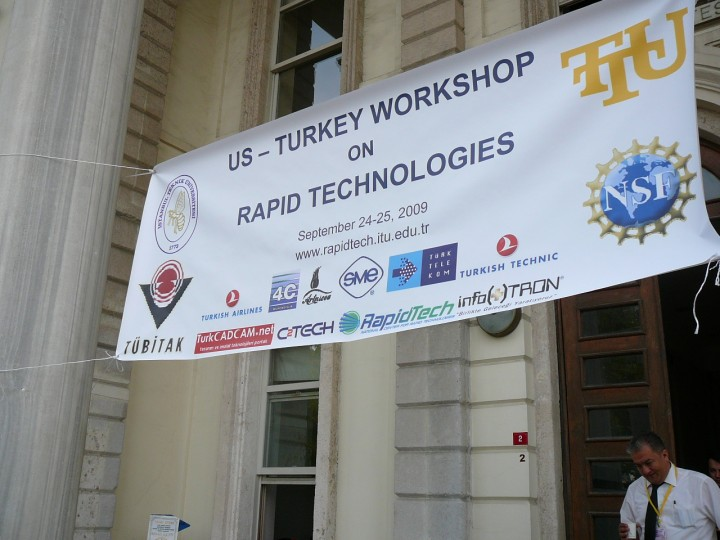
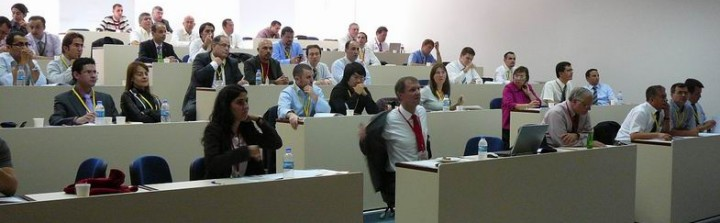
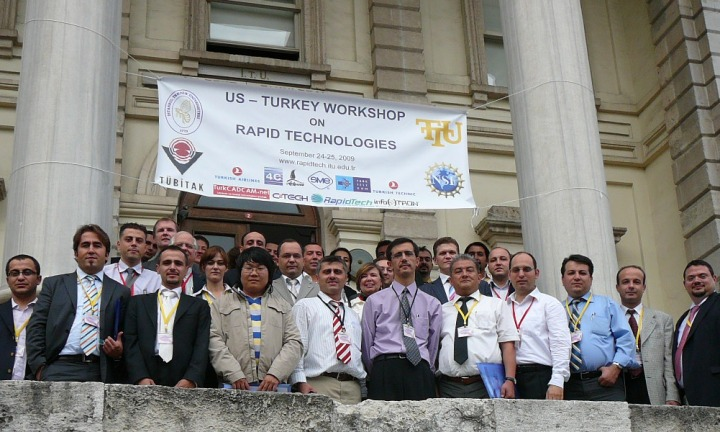

|
Ýlk defa ABD ve Avrupa'dan 3D printer, hýzlý prototip ve imalat teknolojileri konusundaki uzman, akademisyen ve sektör temsilcilerini Türkiye'de bir araya getiren "RapidTech US-Turkey Workshop on Rapid Technologies", ÝTÜ Ýþletme Fakültesi Maçka Kampüsü'nde 4- 25 Eylül 2009 tarihlerinde baþarýyla gerçekleþtirildi.



Bu Workshop'a ait fotoðraf ve videolar ile tüm sunumlarýn pdf formatlý özetlerine aþaðýdaki linklerden eriþebilirsiniz;
| September 24 (Day 1) |
| Session |
Topic |
Global Status of The Industry |
Worldwide Trends in Additive Manufacturing,
Terry Wohlers, Wohlers Associates, Inc., USA |
A Brief History of Additive Manufacturing and the 2009 Roadmap for Additive Manufacturing: Looking Back and Looking Ahead
David Bourel, University of Texas at Austin, USA |
The Wide Adoption of Color in 3D Printing,
John Kawola, Z Corporation, USA |
Creation of RapidTech-National Center for Rapid Technologies,
Ken Patton, Saddleback College, USA |
State of The Industry in Turkey |
A short history and applications of 3D Printing technologies in Turkey,
Erkut Negis, TurkCADCAM.net, Turkey |
Rapid Prototype Studies and Applications in ITU-Faculty of Aeronautics and Astronautics,
A. Rustem Aslan, Istanbul Technical University, Turkey |
Rapid Technologies in P16 |
Rapid Prototyping-Distance Delivery Tools,
Ismail Fidan, Tennessee Tech University, USA and B. Isik, Karabuk University, Turkey |
Rapid Prototyping: A strategy to promote interest in STEM careers,
Sydney Rogers, Alignment Nashville, USA |
Project Based Learning for Higher Education in Additive Manufacturing,
Ed Tackett, RapidTech, USA |
| September 25 (Day 2) |
| Session |
Topic |
R&D Trends in
Higher Education |
Production and Characterization of Uniform and Graded Porous Polyamide Structures Using Selective Laser Sintering,
Merve Erdal, S. Dag, Y. Jande and C. M. Tekin, Middle East Technical University, Turkey |
Customized Scaffold Fabrication with Solid Free Form Technique
C. Ergun, R. S. Toru, A. Bahadir, S. Yilmaz, Istanbul Technical University, Turkey, and S. Basa, Marmara University, Turkey |
An educational tool for RM feasibility evaluation,
Javier Munguia and C. Riba, Technical University of Catalonia, Barcelona, Spain |
Introduction to the Mechanical Engineering Discipline through
Hands-on Product Development Case Studies
G. Altuger, S. Tumkor, C. Chassapis,
Stevens Institute of Technology, Department of Mechanical Engineering, Hoboken, NJ, 07030,
USA |
R&D Trends and Educational
Innovations in
European Universities |
Rapid Manufacturing Research at the Catholic University of Leuven,
E. Yasa and J. P. Kruth, Catholic University of Leuven, Belgium |
Direct Digital Manufacturing as Communication and Implantation Tool in Medicine,
I. Drstvensek, University of Maribor, N. I. Hren, University of Ljubljana, T. Strojnik, University Clinical Centre Maribor, Slovenia |
Effect of Thermal and Mechanical Deformation of Metamaterial FDM Components,
H. K. Celik, Akdeniz University, Turkey, and R. Seviour, A. E. W. Rennie, Lancaster University, UK |
Rapid Manufacturing of dental and medical parts via LaserCUSING® technology using Titanium and CoCr powder materials,
M. C. Sinirlioglu, Hofmann Turk, Turkey |
Daha fazla bilgi için: www.rapidtech.itu.edu.tr
Not: TurkCADCAM.net, bu etkinliðin tanýtým sponsorlarýndandýr.
|